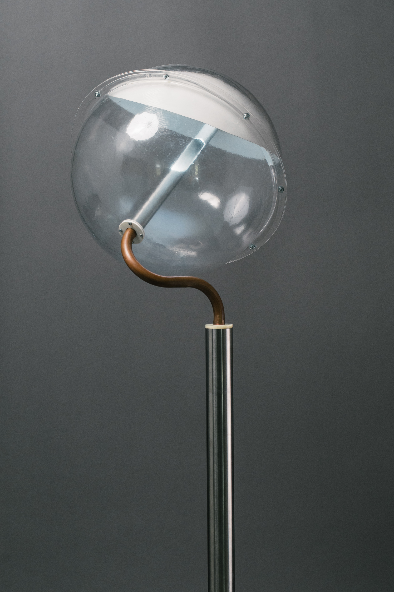

bolygó
- Floorlamp

The floor lamp ‘bolygó’ [i.e. planet and/or in the same time marbler] is a reinterpretation of the work of Sándor 'Borz' Kováts, a less known designer from the early days of Hungarian industrial design, as part of a collaboration between Moholy-Nagy University of Art and Design and the Hungarian Museum of Applied Arts.
Read more...